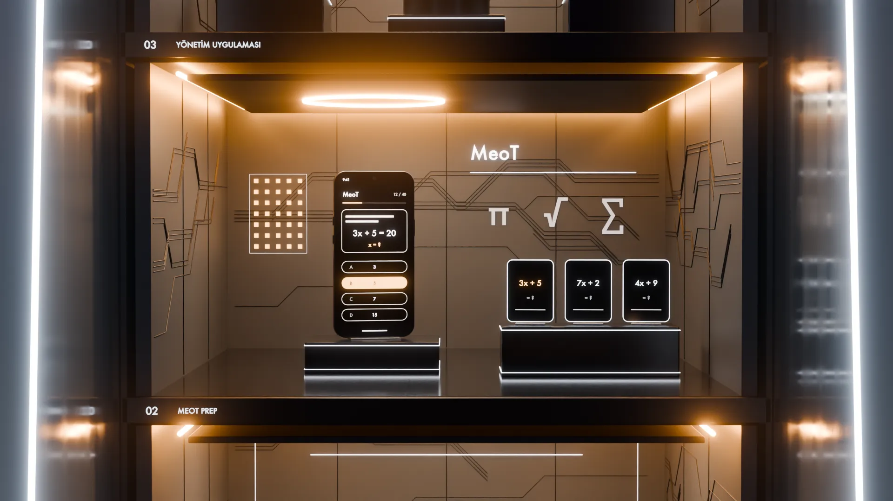
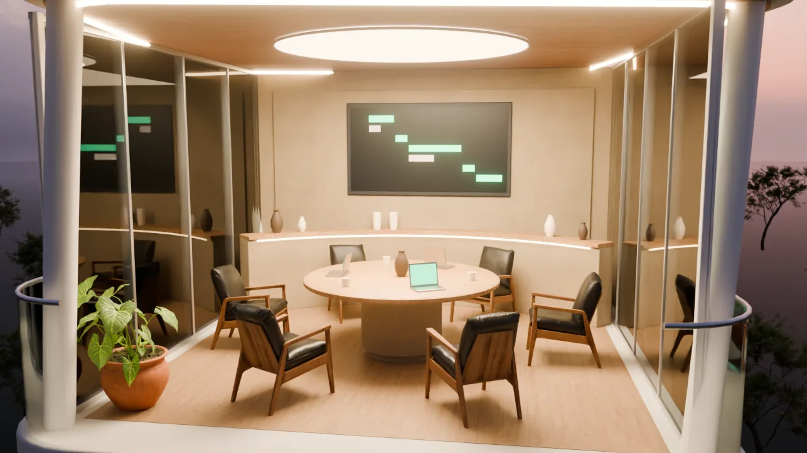
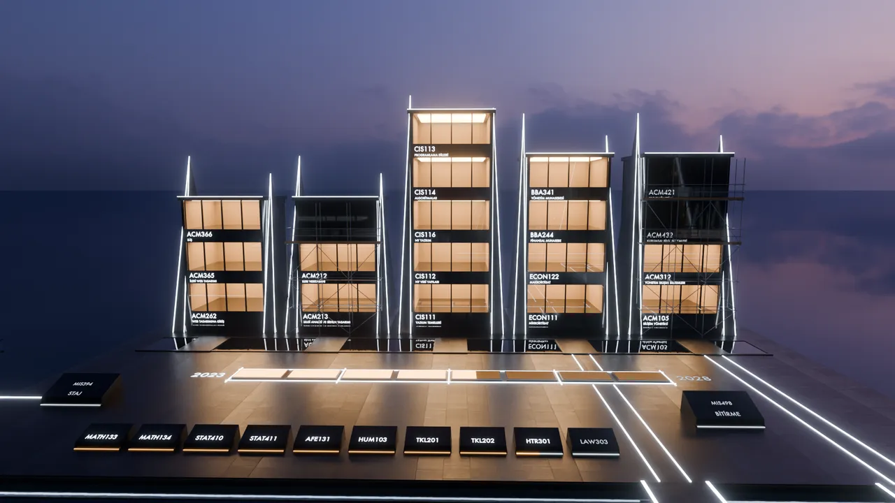

PDF CV'n aynen kalır. İçine koyduğun tek link, yaptığın işleri bina bina gösterir: projeler, sertifikalar, gönüllülük, dil, referanslar. Her biri kanıtıyla.
İşe alım uzmanı CV'ye birkaç saniye bakar ve PDF ister. Seni asıl değerlendirecek kişi ise bağlı olacağın departmanın yöneticisidir. CV Haritası ikisine ayrı kapı açar.
Klasik, tek sayfa, indirilebilir. Hiçbir şey değişmez; sadece altında bir link vardır.
İlana uyan işlerin, adım adım: tasarımın eskizi, yazılımın kodu, projenin planı. Tek bir odanın linkini de verebilirsin.
Bütün deneyimlerin bir arada. Binanın yüksekliği emeği, ışığı güncelliği gösterir.
Bir tasarımcıyla bir yazılımcının kanıtı aynı değildir. Alanını seç; şehrin ona göre şekillenir.
PDF'e görsel sığmaz, portfolyo sitesi kurmak ise ayrı bir iş. İşleri bir yere yüklersin ama süreci kimse görmez.
Neden: Kod yazmadan, kendi adresinde duran ve sürecini de anlatan bir portfolyo.
Depo listesi ne yaptığını anlatmaz. Yönetici, projenin hangi sorunu çözdüğünü ve senin payını görmek ister.
Neden: Kodun okunmasını beklemeden, projenin değeri ilk bakışta anlaşılır.
İşletme ve yönetim öğrencisinin elinde ders notu var, kanıt yok. "Proje yönetimi biliyorum" herkesin CV'sinde yazıyor.
Neden: Görüşmede "nasıl çözerdin?" sorusunun cevabı zaten hazır.
Mimarlık portfolyosu ağır dosyalardan oluşur. İşveren önce birkaç görsele bakmak ister, gerisine sonra.
Neden: Ağır dosya yerine hafif bir link; işveren istediği kadar derine iner.
Staj ararken çoğu öğrencinin iş deneyimi yoktur. Oysa stajyer alımında eğitimler, sertifikalar, gönüllülük, dil ve bildiğin programlar belirleyicidir.
Neden: Düz CV'de boşluk gibi görünen şey, şehirde ilk binaların olarak görünür.
Bakacak kişinin vakti azdır. Her şey ona göre sıralanır.
Ad, hedef pozisyon, üç rakam. Şehri gezmeden karar verilebilir.
Her sayfada "Klasik CV" düğmesi. Sisteme yüklenecek dosya her zaman hazır.
Aday, başvurduğu ilana uyan odaları seçip tek link gönderir. Yönetici yalnızca ilgili işleri görür.
Beyan ile doğrulanmış bilgi ayrı işaretlenir. Referanslar ilgili deneyimin yanında durur.
Güzel görünen profil yetmez. Her deneyim üç etiketten birini taşır; okuyan neye güvenebileceğini bilir.
Sertifika adresi, yayındaki ürün, kod deposu, hoca onayı. Tıklayan kendisi kontrol eder.
O deneyimde birlikte çalıştığın yönetici ya da hoca. Adı ve unvanı görünür; iletişim bilgisi yalnızca istenirse paylaşılır.
Kanıtı henüz eklenmemiş deneyim. Saklanmaz, dürüstçe işaretlenir.
Eğitim, iş, proje, sertifika, gönüllülük, dil. Her birine varsa kanıt linki ve referans.
Her kategori bir bina, her deneyim bir kat. Alanına göre şirket, atölye, ofis ya da laboratuvar eklenir.
cvharitasi.com/adın. İster şehrin tamamını, ister tek bir odayı paylaş.
Ürünün ilk kullanıcısı. Yönetim Bilişim Sistemleri öğrencisi; CV'si bir kulede, ders uygulamaları bir şirkette.

Dokuz kat: yazılım projeleri, kendi işletmesi, sertifikalar, üniversite ve sıradaki hedef. Her katta kanıt linki.

Yönetim dersinde öğrendiklerini hayali bir şirketin beş katında adım adım çözüyor.

Akademi semtinde her ders bir kat; etkinlikler meydanda, kişisel projeler atölyede. Yapıya dokun, içini gör.
İşe alım uzmanı için yeter; bu yüzden PDF'in aynen kalıyor. CV Haritası onun yerine geçmez, arkasında durur: PDF'te "yaptım" dediğin şeyin kanıtını, seni değerlendirecek yöneticiye gösterir.
Özellikle tasarım, sosyal medya ve yazılım alımlarında adayın işlerini görmek isterler. Linke süreçteki herkes bakabilir, ama asıl değerlendiren bağlı olacağın departmanın yöneticisidir. Bu yüzden ilk ekran kısa, ayrıntı bir tık ötede.
Çekirdek binalar (eğitim, iş, sertifika, gönüllülük, dil) herkeste aynıdır. Alana özel yapılar çoğalacak: hukuk için büro, sağlık için klinik, eğitim için sınıf, mühendislik için fabrika gibi.
Hayır. Şehirde referansın adı ve unvanı görünür; iletişim bilgisi yalnızca sen izin verirsen ve istenirse paylaşılır. Referans eklemeden önce o kişinin onayını almalısın.
Hayır. Şehirde telefon numarası yer almaz. İletişim yalnızca senin seçtiğin yoldan kurulur.
Şu an kapalı deneme aşamasındayız ve ilk şehir yayında. Kurulum adımları ve koşullar açılışta duyurulacak.